Масонство в Москве
Достопочтенная Ложа «Новый Свет»
№1989

Достопочтенная Ложа “Новый Свет” №1989 на Вост:. г. Москвы была основана 8 сентября 2013 года и стала первой Ложе Масонского Смешанного Международного Ордена LE DROIT HUMAIN (“Право Человека”) в России. Ее основателями стали Братья, посвященные в Объединенной Великой Ложе России, а также Брат Польской Федерации и Сестра Западно-Африканской Федерации нашего Ордена.
Предпосылкой создания “Нового Света” стало желание создать свою Достопочтенную Ложу, хранящую истинный дух масонского братства, строго следующую традиционному масонскому ритуалу, активно работающую над исследованием важнейших маcонских тем, как символических, так и социальных.
Предварительная работа по созданию этой Мастерской заняла более года, и, кроме административной работы, включала в себя посещение Москвы представителями Верховного Совета в феврале 2013 г., а также посещение Парижа будущими мастерами-основателями в мае. Результатом этой подготовительной работы стало положительное решение Верховного Совета Ордена, принятое на его майском заседании.
В день 8-й сентября месяца 2013 г. на Вост:. г. Москвы прошла церемония Зажжения Огней первой Ложи Ордена «Право Человека» в России. Ложа получила отличительный титул «Новый Свет» и номер 1989. Церемония была проведена Великим Мастером, Заместителем Великого Мастера, Великим Канцлером, при участии представителей Верховного Совета Ордена. В качестве гостей на церемонии присутствовали Братья и Сестры, представлявшие Мастерские различных стран — Польши, Франции, Бельгии, Финляндии. В торжественной обстановке прошла инсталляция офицеров Ложи и Досточтимому Мастеру, которым стал Бр:. А.Г., была передана Хартия на проведение работ по Древнему и Принятому Шотландскому Уставу. Членами-основателями пионерной Ложи стали Братья и Сестры из России, Республики Беларусь, Польши и Мали. Согласно масонскому обычаю братская агапа завершила труды сего дня.
Достопочтенная Ложа «Новый Свет» стала выражением надежд ее основателей и новой ступенью развития адогматичного масонства в современной России. В настоящее время мастерские либеральных послушаний становятся средоточением людей, стремящихся как к самосовершенствованию, так и к улучшению окружающего мира. Именно в этих Ложах тщательно сохраняется масонское учение и традиция, ведется подробное обучение и тщательная работа с кандидатами, проводятся благотворительные и издательские проекты.
Двери наших Храмов открыты для Братьев и Сестер дружественных послушаний, а также для всех достойных кандидатов, решившихся принять Посвящение в наше древнее братство.
С тех пор наша Достопочтенная Ложа проводит свои работы в Москве, 1-2 раза в месяц. На счету Ложи издание книг (серия “Утраченное слово”), периодический журнал “Новый Свет”, масонский информационный проект MasoniInfo, несколько интервью в крупных СМИ, благотворительные проекты и многие другие активности, призванные в полной мере отразить важнейшие принципы масонства: просвещение и распространение света.